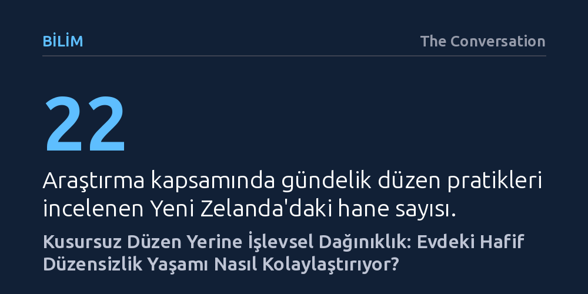

BILIM · The Conversation · 2026-10-27
Yeni Zelanda'da 22 haneyle yapılan araştırma, evdeki hafif dağınıklığın bir başarısızlık değil, gündelik rutinleri ve aile içi ilişkileri kolaylaştıran işlevsel bir denge unsuru olduğunu ortaya koyuyor. Kusursuz düzen arayışı ise sanılanın aksine yaşamı zorlaştırabiliyor.
Evdeki dağınıklığı suçluluk duyulacak bir kusur olarak görmek yerine, paylaşılan alanların gerçek ihtiyaçlara yanıt veren işlevsel bir uzantısı olarak yeniden değerlendirmeyi sağlar.

Marie Kondo gibi düzen uzmanlarının etkisiyle, kusursuz ve derli toplu bir evin hem zihinsel dinginlik hem de sağlıklı bir yaşam için zorunlu olduğuna dair yerleşik bir inanç oluştu. Sosyal medyada parlatılan pürüzsüz tezgahlar, simetrik raflar ve hiçbir fazlalığın yer almadığı steril odalar adeta başarının ve huzurun ölçütü gibi sunuluyor. Ancak Yeni Zelanda'da 22 haneyle gerçekleştirilen yeni bir sosyolojik araştırma, bu geleneksel kabule meydan okuyor: Evdeki dağınıklık her zaman düzeltilmesi gereken bir kusur ya da disiplinsizlik göstergesi olmak zorunda değil.
Araştırma, dağınıklığın çoğu zaman tembellikten değil, evlerin aynı anda birden çok amaca hizmet etmesinden kaynaklandığını ortaya koyuyor. Günümüzde salonlar aynı zamanda çocukların oyun alanına, yatak odaları çalışma ofisine, mutfak tezgahları ise hem yemek hazırlama hem de ödev yapma köşesine dönüşüyor. Mekanların bu çok yönlü kullanımı, kaçınılmaz olarak çeşitli eşyaların belirli yüzeylerde birikmesine yol açıyor ve bu durum yaşamın doğal bir parçası haline geliyor.
İlk bakışta karmaşık veya göze hoş gelmeyen bir düzensizlik, yakından incelendiğinde aslında ailelerin günlük rutinlerini pürüzsüz kılan pratik bir çözüme dönüşebiliyor. Örneğin birçok evde yemek masaları, gün boyunca anahtarların, okul çantalarının ve su mataralarının bırakıldığı bir geçiş istasyonu işlevi görüyor. Benzer şekilde mutfak tezgahının üzerine bırakılan bir eşya, evden çıkarken unutulmasını engelleyen görsel bir uyarıcı görevi üstlenebiliyor. Düzen uğruna bu eşyaları dolaplara kaldırmak, aslında işleyen bir rutini aksatmaktan başka bir işe yaramıyor.
Çalışmaya katılan bir annenin mutfak tezgahını kızıyla hem ortak çalışma alanı hem de yemek masası olarak kullanması bu durumu özetliyor. Masada boya kalemleri ve oyuncaklar birikse de anne, yemek yemeye yeterli alan kaldığı müddetçe bu duruma müdahale etmediğini söylüyor. Buradaki örneklerin gösterdiği gibi, eşyaların ortalıkta durması bir ihmalkarlıktan ziyade, o anki yaşam temposuna ve ihtiyaçlara hizmet eden bilinçli bir yerleşim tercihi olabiliyor.
Evdeki eşyaların yerleşimi, yalnızca pratik ihtiyaçları değil, aynı zamanda aile bireyleri arasındaki duygusal ilişkileri ve birbirlerine duydukları saygıyı da yansıtıyor. Araştırmada bir babanın, kızının hırkasını dolaba kaldırmak yerine sandalyenin arkasında bırakması bunun ince bir örneğini sunuyor. Baba, kızının hırkasını daha önce yaptığı gibi yere fırlatmak yerine sandalyeye asmasını bir ilerleme ve başarı olarak değerlendiriyor; bu çabayı takdir etmek için de eşyayı olduğu yerde bırakıyor. Katı bir düzen ısrarı, bazen bir çocuğun kazandığı bu küçük adımı görmezden gelmek anlamına gelebiliyor.
Benzer bir anlayış yetişkinler arasındaki ortak yaşamda da belirleyici rol oynuyor. Bir evin yalnızca tek bir bireyin düzen standartlarına göre yönetilmesi, diğerlerinin kendilerini o alana ait hissetmesini zorlaştırabiliyor. Eşinin bıraktığı ufak tefek dağınıklıklara katlandığını belirten bir katılımcı, evin müşterek bir yaşam alanı olduğunu ve eşinin de burada yaşama hakkı bulunduğunu ifade ediyor. Eşyaları her ne pahasına olursa olsun ait olduğu yere kaldırma baskısı, birlikte yaşamanın gerektirdiği hoşgörü ve esnekliğin önüne geçebiliyor.
Tüm bu bulgular, toparlanmayı tamamen bırakıp mutlak bir kaosu kabullenmemiz gerektiği anlamına gelmiyor. Nitekim önceki çalışmalar, kronik dağınıklığın bireylerde stres, mahcubiyet ve aile içi gerilimlere yol açtığını; aranan şeylerin bulunmasını zorlaştırıp başkalarına fazladan iş yükü bindirdiğini açıkça belgeliyor. Ancak yeni araştırma, asıl odaklanılması gereken noktanın görsel karmaşa değil, o karmaşanın gündelik yaşamı fiilen aksatıp aksatmadığı olduğunu savunuyor.
İncelenen hanelerin düzensizliği yönetirken üç temel strateji izlediği görülüyor: eşyaları ortadan kaldırmak, onları oldukları gibi hoş görmek veya göz önünden kaldırıp saklamak. Düzen hiçbir zaman kalıcı, statik bir durum değildir; evler yaşandıkça dağılır, ihtiyaç duyulunca toparlanır ve ardından tekrar dağılır. Dolayısıyla bir evin başarısı bir dekorasyon dergisi kadar kusursuz görünmesinde değil, orada yaşayan insanların hayatını ne kadar kolaylaştırdığında gizlidir.